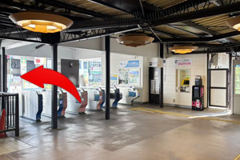
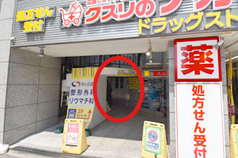

交通アクセス
向ヶ丘遊園整形外科リウマチ科
〒214-0014 神奈川県川崎市多摩区登戸2052 ヨシザワプラザビル3階
当院までの道のり
電車でお越しの方
小田急小田原線「向ヶ丘遊園」駅 南口より徒歩1分
-

南口改札を出たら、左方向へ進みます。 - バスロータリーに面したビルの3階が当院です。
-

1階左側にエレベーターがありますので、3階までお越しください。
車でお越しの方
提携している駐車場がございませんので、近隣のコインパーキング等をご利用ください。